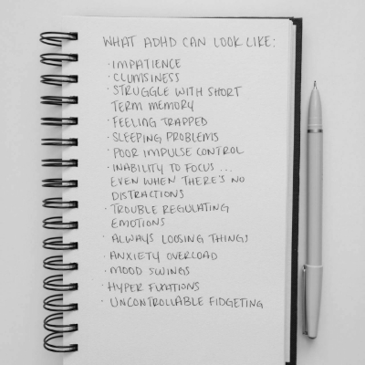

#
Understanding and Supporting Someone with ADHD
Living with someone who has ADHD can be both a wonderful and challenging experience. ADHD comes with its own set of unique traits, and understanding these can help foster a more supportive and harmonious relationship.
This guide is designed to help you gain insight into the everyday experiences of a person with ADHD. Each section below will highlight a common trait or behavior associated with ADHD, both its challenges and hidden strengths.
Most importantly, you'll also find practical tips on how to support your ADHD loved one. By embracing both the challenges and the superpowers of ADHD, you can build a stronger connection and help them thrive.
Click each section below to learn more about a specific aspect of ADHD and ways you can make a positive difference.
Con: Struggling with Focus
People with ADHD may struggle to focus on tasks, especially if those tasks aren't particularly stimulating or exciting. This can lead to feelings of frustration when projects are left incomplete or deadlines are missed.
How You Can Help: Break tasks into smaller, manageable chunks, and offer encouragement or reminders without adding pressure. Creating a calm, quiet environment when focus is needed can also make a significant difference.
Pro: Hyperfocus
ADHD individuals can experience "hyperfocus," a state where they become intensely absorbed in an activity they find interesting. In this state, they can accomplish a lot in a short period of time.
How You Can Support: Recognize and encourage their passions. When they enter a hyperfocused state on a productive task, provide support, and help them channel that energy effectively.
Con: Impulsivity
Impulsiveness in ADHD individuals can lead to making decisions quickly without considering consequences, resulting in misunderstandings or actions they may regret later.
How You Can Help: Offer gentle reminders to pause and consider decisions before acting. Engage in open communication without judgment, allowing them to express their thoughts and plans freely.
Pro: Creativity and Spontaneity
The spontaneous nature of impulsivity is often accompanied by creativity and a willingness to take risks. This allows for unique ideas and innovative solutions to problems.
How You Can Support: Encourage and celebrate their creative ideas. Create an environment where they feel free to explore new possibilities without fear of criticism.
Con: Disorganization and Forgetfulness
Many ADHD individuals struggle to stay organized and often forget important details or appointments. This can be frustrating for both them and the people around them.
How You Can Help: Provide gentle reminders for important tasks or events. You can also help by setting up shared organizational tools, like digital calendars or to-do lists, to keep things on track.
Pro: Adaptability and Flexibility
ADHD individuals often adapt quickly to change and can shift gears easily when necessary. This flexibility allows them to handle unexpected situations better than most.
How You Can Support: Celebrate their adaptability and encourage them to use it as a strength. Help them identify when it’s best to switch focus or try a different approach to a task.
Con: Difficulty with Routine and Repetitive Tasks
Routine and repetitive tasks can be particularly hard for ADHD individuals, making chores or administrative work feel nearly impossible and often leading to procrastination.
How You Can Help: Vary the routine to keep it interesting or find ways to gamify mundane tasks. Encouraging regular breaks and using reminders or checklists can also make tasks feel more achievable.
Pro: A Strong Drive for Novelty
The ADHD mind craves novelty and excitement. This drive can make them excellent at exploring new hobbies, learning skills, and constantly seeking new adventures.
How You Can Support: Encourage exploration and variety in their activities. Help them find new and exciting ways to approach routine tasks or balance repetitive work with more stimulating activities.
Con: Difficulty Regulating Emotions
Emotional dysregulation is common with ADHD, making it hard to manage intense emotions. This can result in quick mood shifts and strong emotional reactions.
How You Can Help: Offer a listening ear and provide a safe space for them to express emotions. Gently remind them to take a pause before reacting, and encourage calming activities like mindfulness or breathing exercises.
Pro: Deep Empathy and Passion
The intensity of emotions can also translate into deep empathy and passion. This allows ADHD individuals to connect with others on a deep level and bring genuine enthusiasm to their endeavors.
How You Can Support: Appreciate their passion and emotional depth. Engage in meaningful conversations that allow them to express their feelings and ideas fully.
Con: Anxiety and Overthinking
An ADHD mind is often in overdrive, leading to racing thoughts and overthinking. This can cause anxiety, stress, and difficulty relaxing.
How You Can Help: Encourage mindfulness techniques, regular exercise, and moments of relaxation. Being supportive and helping them talk through their thoughts can also ease their anxiety and provide clarity.
Pro: Problem-Solving Skills and Resilience
The constant thinking can lead to quick problem-solving skills and resilience. ADHD individuals are often able to find solutions rapidly, seeing things from perspectives others may miss.
How You Can Support: Encourage their problem-solving abilities and provide opportunities where they can use their quick-thinking skills. Validate their thoughts and ideas, fostering their resilience.
Click here to learn about their Internal Voices
Con: Multipul voices all talking at the same time.
People with ADHD may struggle to hold a conversation going in one direction, especially if the many conversations in their head they are having are taking them a difference direction. Especially if they are stimulating or exciting. This can lead to feelings of frustration on both sides.
Here is a small smaple of what is happening in an ADHD brain while holding a converstion.
How You Can Help: Be pacient, when the conversation drifts off onto another topic allow it to. Then you can slowly guide them back to what you where origonaly talking about. However if the topic is an uncomfortable one, you may have to brake it down into multipul smaller conversations. This can make a significant difference and make the converstaion less frustrating for you both.
Pros: Internal Voicemail
ADHD individuals can experience "Internal Voicemail," Have you ever spoken to someone who didn't seem to catch what you said? Then as you start to say it again they answer you. When this indervidual has ADHD they can have a conversation with one of the voices who tells them what you just said but faster than you can repeat yourself.
How You Can Support: Recognize that they didn't ignore you and their voicemail picked it up. Also don't get annoyed when they talk over you, they already know what you are going to say.
In Conclusion
Living with ADHD is a journey of unique strengths and challenges. By understanding and supporting the ADHD individual's needs, you can help them harness their talents and overcome difficulties, making life brighter and more fulfilling for everyone involved.